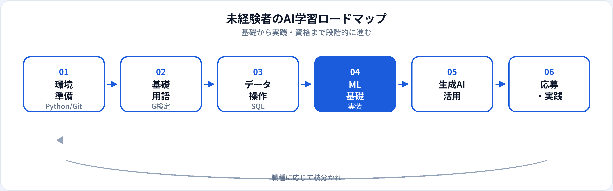

未経験からAI関連職へ進むとき、いきなり深層学習やLLMに飛びつくと挫折しやすいです。本記事では、2026年6月時点の一般的な学習順序を全体版ロードマップとして整理します。週10〜15時間の自学を想定した目安期間付きで、段階ごとに「何ができるようになるか」も示します。狙う職種が決まっている場合は、未経験者向けAI職種5つとあわせて読んでください。
ロードマップ全体像

全体の目安は6〜15か月（学習時間・目標職種により変動）です。資格（G検定）と実装は並行が効率的で、「資格だけ→実装なし」は転職では弱くなりがちです。詳しくはG検定のキャリアへの活かし方を参照してください。
フェーズ1：環境準備（1〜2か月）
ゴール：Pythonで小さなスクリプトが書け、Gitでコードを管理できる。
| 学ぶこと | 具体的内容 | 完了の目安 |
|---|---|---|
| Python基礎 | 変数、関数、リスト、辞書、ファイル入出力 | 100行程度のスクリプトを自力で書ける |
| 開発環境 | VS Code / Cursor、仮想環境（venv）、ターミナル | プロジェクトをフォルダで管理できる |
| Git | commit、push、GitHubへの公開 | README付きリポジトリを1つ作れる |
フェーズ2：AIリテラシー（2〜4か月目）
ゴール：AI・機械学習・ディープラーニングの関係を説明でき、G検定レベルの用語に慣れる。
-
用語と概念
教師あり/なし、過学習、評価指標、ニューラルネットの概要。当サイトのG検定対策で演習しながら進める。
- 演習例
-
数学
最初は「統計の直感」「グラフの読み方」から。線形代数はML実装フェーズで深掘りすればよい。
フェーズ3：データ操作（3〜5か月目）
ゴール：SQLで集計でき、pandasでCSVを加工できる。
SQL
SELECT、JOIN、GROUP BY、ウィンドウ関数の基礎。公開データや社内データで練習。
pandas
読み込み、欠損処理、集計、簡単な可視化。データアナリスト職の土台になる。
BI（任意）
スプレッドシート、Looker Studio、Tableauなど。可視化職種を狙うなら早めに。
詳細はデータアナリストとはのロードマップも参照。
フェーズ4：機械学習の実装（5〜9か月目）
ゴール：scikit-learnで学習〜評価までをスクリプト化し、再現可能な形でGitHubに公開できる。
-
教師あり学習の end-to-end
前処理、学習、ホールドアウト評価。ノートブックではなく
.py＋requirements.txtで再現可能に。 -
評価指標の選択
分類なら精度だけでなく適合率・再現率。回帰ならMAE/RMSE。ビジネス文脈で説明できるようにする。
-
デプロイの入口（任意）
FastAPIやStreamlitで推論結果を見せる。AIエンジニア職を狙うならここまで進める。
詳細はAIエンジニアとは、機械学習エンジニアとはを参照。
フェーズ5：生成AI・専門分岐（並行〜）
基礎が固まったら、興味と職種に応じて枝分かれします。
| 方向性 | 学ぶこと | 関連ガイド |
|---|---|---|
| 生成AIエンジニア | LLM API、プロンプト、RAG、評価 | 生成AIエンジニアとは |
| プロンプト・業務活用 | プロンプト設計、ガードレール、業務組み込み | プロンプトエンジニアとは |
| データサイエンティスト | 統計、仮説検証、実験設計 | データサイエンティストとは |
| MLOps | Docker、CI/CD、監視（インフラ経験者向け） | MLOpsエンジニアとは |
生成AIパスポート
業務活用・リスク理解なら生成AIパスポート対策が学習整理に有用です。エンジニア主軸ならG検定を先に、という整理も可能です。
フェーズ6：ポートフォリオと応募
ゴール：職種に合った成果物を1〜3個用意し、面接で説明できる。具体的な作り方はAI職向けポートフォリオの作り方を参照。
-
データアナリスト向け
「問い→SQL→可視化→示唆」の一連をREADME付きで公開。
-
AIエンジニア向け
学習スクリプト＋評価結果＋（任意）API。G検定合格とセットでアピール。
-
応募のタイミング
完璧を待たず、ジュニア求人に早期応募してフィードバックを得る方法も有効。
職種別の枝分かれ（早見表）
| 狙う職種 | フェーズ1〜3 | フェーズ4以降の重点 |
|---|---|---|
| データアナリスト | 必須 | BI強化。MLは基礎理解で可 |
| AIエンジニア | 必須 | ML実装＋デプロイ体験 |
| データサイエンティスト | 必須 | 統計・仮説検証・モデル |
| 生成AIエンジニア | Python必須 | LLM・RAG・評価 |
よくある質問
未経験からAI職までどのくらいかかる？
週10〜15時間なら、入口職種で6〜9か月、AIエンジニア寄りで9〜15か月が目安です。
数学はどの程度必要？
アナリスト・業務活用なら統計の直感から。MLエンジニア寄りは徐々に深掘りすればよく、最初から完璧は不要です。
G検定はいつ取るべき？
学習開始2〜4か月目、Python基礎と並行が目安です。G検定のキャリア活かし方も参照してください。
生成AIは最初から学ぶべき？
ツール体験は早めにしてよいですが、転職の主軸はデータ操作とML基礎を先に固める方が挫折しにくいです。
独学とスクールはどちらがよい？
自律的に進められるなら独学＋当サイトの演習で十分なことも多いです。モチベーション維持やメンターが必要ならスクールも選択肢です。